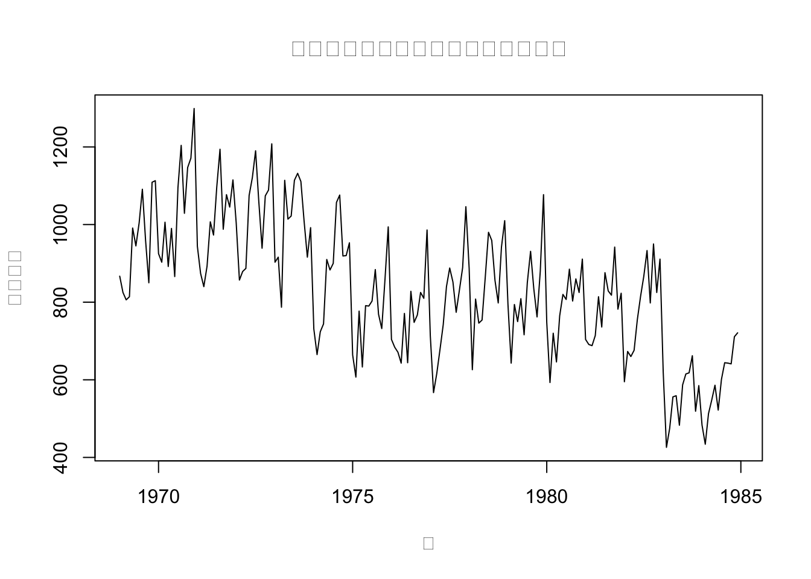
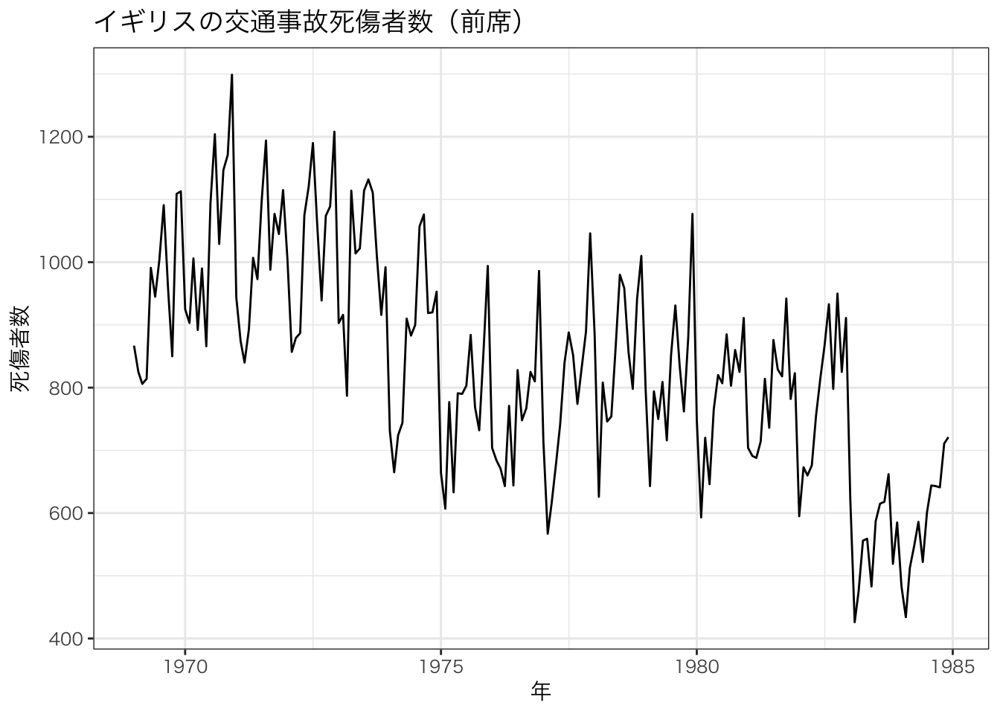

6章Rによる時系列の取り扱い
# パッケージのインポート
library(xts)## Loading required package: zoo##
## Attaching package: 'zoo'## The following objects are masked from 'package:base':
##
## as.Date, as.Date.numericlibrary(forecast)## Registered S3 method overwritten by 'quantmod':
## method from
## as.zoo.data.frame zoolibrary(urca)
library(ggplot2)
library(ggfortify)## Registered S3 methods overwritten by 'ggfortify':
## method from
## autoplot.Arima forecast
## autoplot.acf forecast
## autoplot.ar forecast
## autoplot.bats forecast
## autoplot.decomposed.ts forecast
## autoplot.ets forecast
## autoplot.forecast forecast
## autoplot.stl forecast
## autoplot.ts forecast
## fitted.ar forecast
## fortify.ts forecast
## residuals.ar forecastpar(family = "HiraKakuProN-W3")
theme_set( theme_bw(base_family = "HiraKakuProN-W3"))0.0.0.1 6-12.時系列データts型
- 開始時点と「1年に何回データが取られるか」という頻度を指定
# 2000年1月から月単位で36個を格納
ts_sample <- ts(1:36, start = c(2000,1), frequency = 12)
ts_sample## Jan Feb Mar Apr May Jun Jul Aug Sep Oct Nov Dec
## 2000 1 2 3 4 5 6 7 8 9 10 11 12
## 2001 13 14 15 16 17 18 19 20 21 22 23 24
## 2002 25 26 27 28 29 30 31 32 33 34 35 36# 四半期の場合
ts_freq4 <- ts(c(1,4,7,3,9,2,5,3), start = c(2000,1), frequency = 4)
ts_freq4## Qtr1 Qtr2 Qtr3 Qtr4
## 2000 1 4 7 3
## 2001 9 2 5 3- 多変量時系列データを作成する場合は、matrix型やdata.frame型のデータを引数に入れる。
# 行列の作成
mat_with_name <- matrix(
c(1,2,3,4,5,6,7,8),
ncol = 4,
byrow = T,
dimnames = list(c("row1","row2"), c("col1", "col2", "col3", "col4"))
)
# 作成した行列を用いて、ts型に変換
ts_multi <- ts(mat_with_name, start = c(2000,1), frequency = 12)
ts_multi## col1 col2 col3 col4
## Jan 2000 1 2 3 4
## Feb 2000 5 6 7 8- 作成したts型のデータに対して、window関数を用いることで、特定の期間を抽出可能
window(ts_freq4, start=c(2000,2), end=c(2001,1))## Qtr1 Qtr2 Qtr3 Qtr4
## 2000 4 7 3
## 2001 9- RにはPython同様、様々なサンプルデータが用意されている。
# シートベルト法案の有無と交通事故死傷者数の時系列推移
head(Seatbelts[,], n = 3)## DriversKilled drivers front rear kms PetrolPrice VanKilled law
## Jan 1969 107 1687 867 269 9059 0.1029718 12 0
## Feb 1969 97 1508 825 265 7685 0.1023630 6 0
## Mar 1969 102 1507 806 319 9963 0.1020625 12 0# 多変量の場合、[]で特定の列を抽出
Seatbelts[, "front"]## Jan Feb Mar Apr May Jun Jul Aug Sep Oct Nov Dec
## 1969 867 825 806 814 991 945 1004 1091 958 850 1109 1113
## 1970 925 903 1006 892 990 866 1095 1204 1029 1147 1171 1299
## 1971 944 874 840 893 1007 973 1097 1194 988 1077 1045 1115
## 1972 1005 857 879 887 1075 1121 1190 1058 939 1074 1089 1208
## 1973 903 916 787 1114 1014 1022 1114 1132 1111 1008 916 992
## 1974 731 665 724 744 910 883 900 1057 1076 919 920 953
## 1975 664 607 777 633 791 790 803 884 769 732 859 994
## 1976 704 684 671 643 771 644 828 748 767 825 810 986
## 1977 714 567 616 678 742 840 888 852 774 831 889 1046
## 1978 889 626 808 746 754 865 980 959 856 798 942 1010
## 1979 796 643 794 750 809 716 851 931 834 762 880 1077
## 1980 748 593 720 646 765 820 807 885 803 860 825 911
## 1981 704 691 688 714 814 736 876 829 818 942 782 823
## 1982 595 673 660 676 755 815 867 933 798 950 825 911
## 1983 619 426 475 556 559 483 587 615 618 662 519 585
## 1984 483 434 513 548 586 522 601 644 643 641 711 721# ベクトルを用いて、複数列の抽出
Seatbelts[, c("front", "PetrolPrice")]## front PetrolPrice
## Jan 1969 867 0.10297181
## Feb 1969 825 0.10236300
## Mar 1969 806 0.10206249
## Apr 1969 814 0.10087330
## May 1969 991 0.10101967
## Jun 1969 945 0.10058119
## Jul 1969 1004 0.10377398
## Aug 1969 1091 0.10407640
## Sep 1969 958 0.10377398
## Oct 1969 850 0.10302640
## Nov 1969 1109 0.10273011
## Dec 1969 1113 0.10199719
## Jan 1970 925 0.10127456
## Feb 1970 903 0.10070398
## Mar 1970 1006 0.10013961
## Apr 1970 892 0.09862110
## May 1970 990 0.09834929
## Jun 1970 866 0.09808018
## Jul 1970 1095 0.09727921
## Aug 1970 1204 0.09741062
## Sep 1970 1029 0.09742524
## Oct 1970 1147 0.09638063
## Nov 1970 1171 0.09573896
## Dec 1970 1299 0.09510631
## Jan 1971 944 0.09673597
## Feb 1971 874 0.09610922
## Mar 1971 840 0.09536725
## Apr 1971 893 0.09470959
## May 1971 1007 0.09411762
## Jun 1971 973 0.09353215
## Jul 1971 1097 0.09295405
## Aug 1971 1194 0.09283979
## Sep 1971 988 0.09272474
## Oct 1971 1077 0.09226965
## Nov 1971 1045 0.09170669
## Dec 1971 1115 0.09126207
## Jan 1972 1005 0.09071160
## Feb 1972 857 0.09027633
## Mar 1972 879 0.08995192
## Apr 1972 887 0.08909964
## May 1972 1075 0.08867919
## Jun 1972 1121 0.08815929
## Jul 1972 1190 0.08890206
## Aug 1972 1058 0.08818133
## Sep 1972 939 0.08894029
## Oct 1972 1074 0.08772661
## Nov 1972 1089 0.08742885
## Dec 1972 1208 0.08703543
## Jan 1973 903 0.08644992
## Feb 1973 916 0.08587264
## Mar 1973 787 0.08539822
## Apr 1973 1114 0.08382198
## May 1973 1014 0.08459078
## Jun 1973 1022 0.08413690
## Jul 1973 1114 0.08377841
## Aug 1973 1132 0.08351074
## Sep 1973 1111 0.08280639
## Oct 1973 1008 0.08117889
## Nov 1973 916 0.08285361
## Dec 1973 992 0.09419012
## Jan 1974 731 0.09239984
## Feb 1974 665 0.10816148
## Mar 1974 724 0.10721169
## Apr 1974 744 0.11404297
## May 1974 910 0.11245412
## Jun 1974 883 0.11131625
## Jul 1974 900 0.11030125
## Aug 1974 1057 0.10819718
## Sep 1974 1076 0.10702744
## Oct 1974 919 0.10494698
## Nov 1974 920 0.11935775
## Dec 1974 953 0.11762190
## Jan 1975 664 0.13302742
## Feb 1975 607 0.13084524
## Mar 1975 777 0.12831848
## Apr 1975 633 0.12354745
## May 1975 791 0.11858681
## Jun 1975 790 0.11633748
## Jul 1975 803 0.11516148
## Aug 1975 884 0.11450120
## Sep 1975 769 0.11352298
## Oct 1975 732 0.11193018
## Nov 1975 859 0.11061053
## Dec 1975 994 0.11527439
## Jan 1976 704 0.11379349
## Feb 1976 684 0.11234958
## Mar 1976 671 0.11175347
## Apr 1976 643 0.10964252
## May 1976 771 0.10844090
## Jun 1976 644 0.10788494
## Jul 1976 828 0.10908477
## Aug 1976 748 0.10757145
## Sep 1976 767 0.10616402
## Oct 1976 825 0.10630000
## Nov 1976 810 0.10482531
## Dec 1976 986 0.10345175
## Jan 1977 714 0.10144992
## Feb 1977 567 0.10040232
## Mar 1977 616 0.09886203
## Apr 1977 678 0.10249615
## May 1977 742 0.10302743
## Jun 1977 840 0.10217891
## Jul 1977 888 0.09983664
## Aug 1977 852 0.09263669
## Sep 1977 774 0.09181496
## Oct 1977 831 0.09072430
## Nov 1977 889 0.09002121
## Dec 1977 1046 0.08933071
## Jan 1978 889 0.08844273
## Feb 1978 626 0.08835257
## Mar 1978 808 0.08675736
## Apr 1978 746 0.08499524
## May 1978 754 0.08456794
## Jun 1978 865 0.08443190
## Jul 1978 980 0.08435088
## Aug 1978 959 0.08360098
## Sep 1978 856 0.08341726
## Oct 1978 798 0.08274514
## Nov 1978 942 0.08523527
## Dec 1978 1010 0.08477030
## Jan 1979 796 0.08445892
## Feb 1979 643 0.08535212
## Mar 1979 794 0.08755921
## Apr 1979 750 0.09038292
## May 1979 809 0.09078329
## Jun 1979 716 0.10874278
## Jul 1979 851 0.11414223
## Aug 1979 931 0.11299293
## Sep 1979 834 0.11132071
## Oct 1979 762 0.10912623
## Nov 1979 880 0.10769846
## Dec 1979 1077 0.10760157
## Jan 1980 748 0.10377502
## Feb 1980 593 0.10711417
## Mar 1980 720 0.10737477
## Apr 1980 646 0.11169537
## May 1980 765 0.11063818
## Jun 1980 820 0.11185521
## Jul 1980 807 0.10974234
## Aug 1980 885 0.10819393
## Sep 1980 803 0.10625536
## Oct 1980 860 0.10419303
## Nov 1980 825 0.10193397
## Dec 1980 911 0.10279382
## Jan 1981 704 0.10476034
## Feb 1981 691 0.10400254
## Mar 1981 688 0.11665552
## Apr 1981 714 0.11516148
## May 1981 814 0.11298954
## Jun 1981 736 0.11386064
## Jul 1981 876 0.11911808
## Aug 1981 829 0.12448999
## Sep 1981 818 0.12322295
## Oct 1981 942 0.12067793
## Nov 1981 782 0.12104898
## Dec 1981 823 0.11696857
## Jan 1982 595 0.11275026
## Feb 1982 673 0.10807931
## Mar 1982 660 0.10883852
## Apr 1982 676 0.11129177
## May 1982 755 0.11130401
## Jun 1982 815 0.11545436
## Jul 1982 867 0.11476830
## Aug 1982 933 0.11720743
## Sep 1982 798 0.11907640
## Oct 1982 950 0.11796586
## Nov 1982 825 0.11744913
## Dec 1982 911 0.11698846
## Jan 1983 619 0.11261054
## Feb 1983 426 0.11365702
## Mar 1983 475 0.11314445
## Apr 1983 556 0.11849553
## May 1983 559 0.11796940
## Jun 1983 483 0.11768661
## Jul 1983 587 0.12005924
## Aug 1983 615 0.11943775
## Sep 1983 618 0.11888127
## Oct 1983 662 0.11846236
## Nov 1983 519 0.11801660
## Dec 1983 585 0.11770662
## Jan 1984 483 0.11777609
## Feb 1984 434 0.11479699
## Mar 1984 513 0.11573525
## Apr 1984 548 0.11535626
## May 1984 586 0.11481536
## Jun 1984 522 0.11477748
## Jul 1984 601 0.11493598
## Aug 1984 644 0.11479699
## Sep 1984 643 0.11409316
## Oct 1984 641 0.11646552
## Nov 1984 711 0.11602611
## Dec 1984 721 0.11606673# subset関数で特定の月のみを抽出(forecastに内包)
subset(Seatbelts[, "front"], month = 3)## Time Series:
## Start = 1969.167
## End = 1984.167
## Frequency = 1
## [1] 806 1006 840 879 787 724 777 671 616 808 794 720 688 660 475
## [16] 5130.0.0.2 6-13.拡張された時系列データxts型
- ts型は日単位に弱いという欠点がある。
- その欠点を補うのにzoo等の時系列を取り扱う型が用意されており、それを統合したのがxtsである。
# 行名として日付を指定したmatrix型データを引数に与える
xts_sample <- as.xts(matrix(
c(1,2,3,4,5),
dimnames = list(
c("2000-01-01","2000-01-02","2000-01-03","2000-01-04","2000-01-05")
),
ncol = 1
))
xts_sample## [,1]
## 2000-01-01 1
## 2000-01-02 2
## 2000-01-03 3
## 2000-01-04 4
## 2000-01-05 5# xts型はデータ抽出がとても簡単
xts_sample["2000-01-01"]## [,1]
## 2000-01-01 1# ある日付以降
xts_sample["2000-01-02::"]## [,1]
## 2000-01-02 2
## 2000-01-03 3
## 2000-01-04 4
## 2000-01-05 5# 範囲指定
xts_sample["2000-01-02::2000-01-04"]## [,1]
## 2000-01-02 2
## 2000-01-03 3
## 2000-01-04 40.0.0.3 6-14.ファイルデータの取り込み
- ファイルからデータを読み込むと原則data.frame型で読み込まれる。
- ts型は引数にdata.frame型を取れるためそのまま変換が可能
- xts型はそうはいかず、少々工夫が必要になる。
file_data <- read.csv("./data/5-2-1-timeSeries.csv")
file_data## time data
## 1 2000-01-01 1
## 2 2000-01-02 2
## 3 2000-01-03 3
## 4 2000-01-04 4
## 5 2000-01-05 5# ファイルのフルパスではなく、ファイル選択ダイアログを表示し、選択
# file_data_2 <- read.csv(file.choose())- read.delim(“clipboard”)を使うことで、Excel等でコピーした内容をそのまま取り込むことができる。
class(file_data)## [1] "data.frame"- xts型に変換するには、read.zoo()を用いるのが簡単
# 1列目が時間のラベルになっている。
file_data_xts <- as.xts(
read.zoo(file_data)
)
file_data_xts## [,1]
## 2000-01-01 1
## 2000-01-02 2
## 2000-01-03 3
## 2000-01-04 4
## 2000-01-05 50.0.0.4 6-15.グラフの描画
plot(
Seatbelts[, "front"],
main = "イギリスの交通事故死者数（前席）",
xlab = "年",
ylab = "死傷者数"
)
# より見やすく
autoplot(
Seatbelts[, "front"],
main = "イギリスの交通事故死傷者数（前席）",
xlab = "年",
ylab = "死傷者数"
)
0.0.0.5 6-16.単位根検定
- urcaでkpss検定を実装
# 対数に変換しつつ、kpss検定
summary(ur.kpss(log(Seatbelts[, "front"])))##
## #######################
## # KPSS Unit Root Test #
## #######################
##
## Test is of type: mu with 4 lags.
##
## Value of test-statistic is: 2.3004
##
## Critical value for a significance level of:
## 10pct 5pct 2.5pct 1pct
## critical values 0.347 0.463 0.574 0.739# forecastのndiffs関数を使うといくつ階差を取ればいいかがわかる
ndiffs(log(Seatbelts[, "front"]))## [1] 1